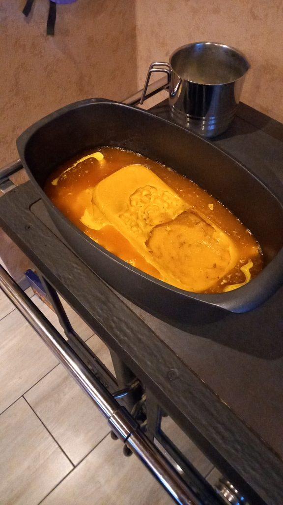

Nach einer ersten Durchsicht in den warmen Tagen des Februars habe ich einige leere und dunkle Alt-Rähmchen entfernt und teilweise durch Futterrähmchen oder neuere ausgebaute Rähmchen ersetzt. Darunter befanden sich auch einige Mini-Plus-Rähmchen aus dem Überwinterungskasten (modifizierter Dadant), die jetzt vom Altwachs befreit und später mit neuen Mittelwänden bestückt werden sollen.


Nach einer kurzen Aufheizphase des selbst gebauten Dampfwachsschmelzers kommt das flüssige Wachs schnell ins Laufen und sammelt sich, vorgefiltert durch ein Spülsieb, in einer darunterstehenden Edelstahlschale.
Aus dieser kann das Wachs nach dem Abkühlen einfach als Platte entnommen und die Unterseite mit einem Esslöffel von grobem Unrat befreit werden. Ist dies geschehen, geht es zusammen mit Wasser in einen alten Alubräter. Kurz aufkochen lassen, bis das Wachs wieder flüssig ist, dann kann die Suppe wieder abkühlen.

Ist das Wachs abgekühlt, kann die Unterseite der Wachsplatte wieder mit einem Esslöffel von weiteren abgesetzten Schwebstoffen befreit werden.
Damit ist das Wachs so weit von grobem Schmutz befreit und kann nun abschließend „in Form“ gebracht werden. Dazu wird das Wachs (ohne Wasser) erhitzt und durch einen Feinstrumpf in alte Buttertöpfchen gegossen. Damit ist das Wachs fertig und kann gelagert oder zu neuen Wachsplatten weiterverarbeitet werden.